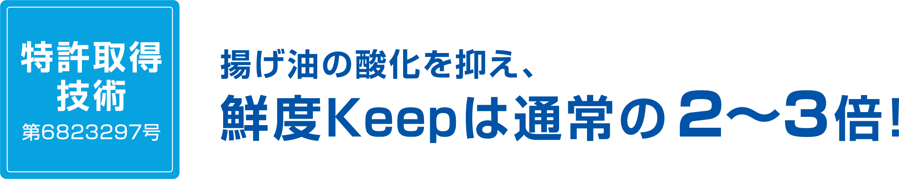
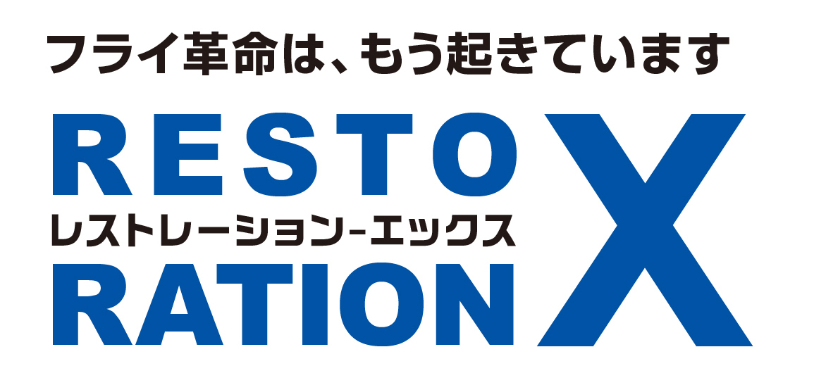
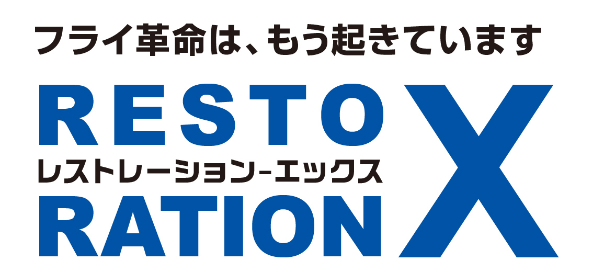
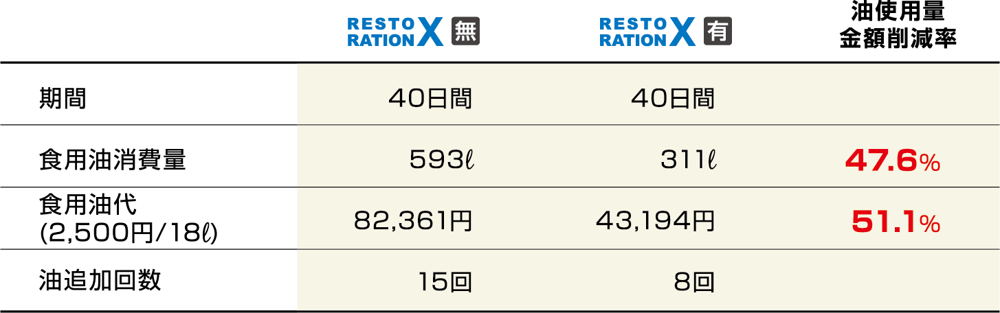
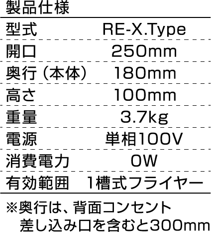
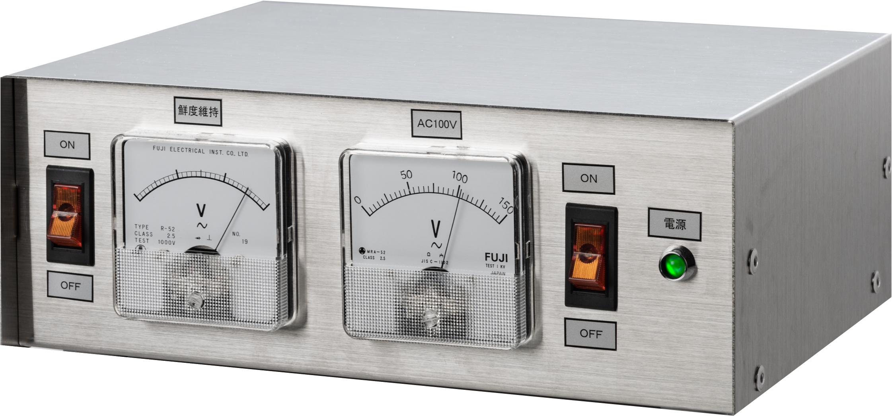
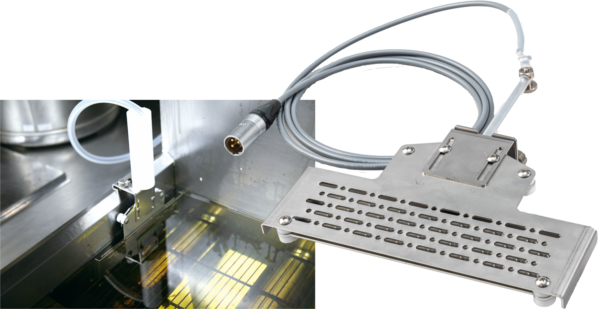
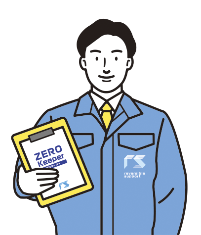

 

その油で大丈夫ですか？
揚げ油は何度か繰り返して使っていると確実に劣化します。これは加熱により「酸化」するため。そして酸化した油は風味が悪くなり、味が劣化します。 さらに酸化が進むと過酸化脂質という物質が生成され、健康被害に繋がります。下痢や嘔吐、胸焼けなどを発症することもあり、クレームにのリスクさえ引き起こします。
油こそ鮮度が生命！
揚げ油の劣化は、空気中の酸素や光に触れることで始まり、加熱や不純物の混入で混入で急速に進みます。レストレーションXは電気の作用で、揚げ油の劣化を抑制します。 揚げ油の鮮度は、ダイレクトに料理の味に直結しし、繊細な油の風味を維持します。店の味のクォリティアップとコストダウンに大きく貢献します。
■導入店舗の事例
■導入店舗スタッフの声

設置手間いらず。低ランニングコストは、お店の味方!



アタッチメントをフライヤーにセット
《販売価格》380,000円(税込418,000円)
《リース価格》7年リース/月々5,396円(税込5,935円)
